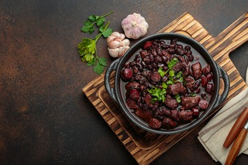
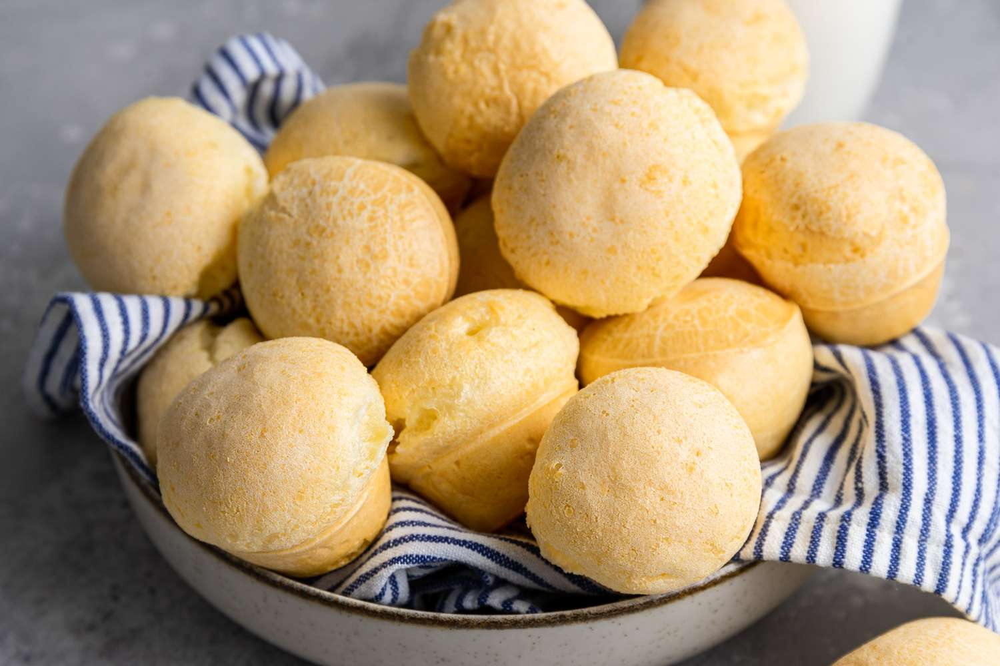
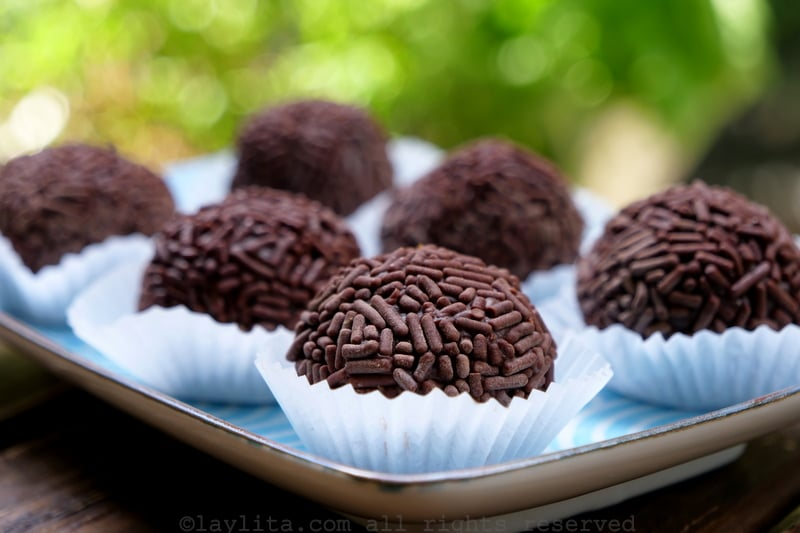

Un poco sobre Brasil...
Tierra de colores vibrantes y horizontes infinitos, Brasil es un destino que enamora desde el primer instante. Su inmenso territorio alberga maravillas únicas como la selva amazónica, las imponentes Cataratas del Iguazú y playas de ensueño que se extienden a lo largo de todo su litoral atlántico.
Su cultura, nacida del encuentro entre raíces indígenas, africanas y europeas, se refleja en la hospitalidad de su gente, la alegría del Carnaval y el sonido envolvente de la samba. Sumado a su pasión histórica por el fútbol y una gastronomía llena de sabores tropicales, Brasil invita a vivir una experiencia inolvidable donde cada día se siente como una fiesta.
Feijoada

Descripción:
Considerada el máximo ícono de la gastronomía brasileña, la feijoada es un guiso abundante, reconfortante y lleno de sabor cuya base son los frijoles negros cocidos a fuego lento junto con una variada selección de carnes de cerdo y res saladas o ahumadas. Nacida de la fusión entre las tradiciones culinarias portuguesas y la creatividad de la cultura afrobrasileña, hoy es la protagonista indiscutida de los almuerzos familiares y las reuniones de fin de semana.
Se sirve tradicionalmente bien caliente acompañada de arroz blanco, farofa (harina de mandioca tostada), col rizada (couve) salteada con ajo y rodajas frescas de naranja, que aportan un contraste cítrico ideal para equilibrar la intensidad del plato.
Ingredientes:
- Frijoles negros (porotos negros): 500 gramos.
- Carne seca o charque (tasajo): 250 gramos.
- Costillas de cerdo saladas o ahumadas: 250 gramos.
- Chorizo criollo o longaniza ahumada (paio o calabresa): 200 gramos.
- Panceta ahumada (tocino): 150 gramos.
- Cebolla grande: 2 unidades picadas.
- Ajo: 4 dientes picados.
- Hojas de laurel: 2 unidades.
- Aceite o manteca de cerdo: 2 cucharadas para sofreír.
- Sal y pimienta negra: a gusto.
- Guarniciones tradicionales: arroz blanco, farofa, hojas de couve (kale o repollo) y rodajas de naranja.
Video Explicativo:
Receta Feijoada
Pão de queijo

Descripción:
Originario del estado de Minas Gerais, el pão de queijo (pan de queso) es uno de los bocados más queridos y populares de todo Brasil. Se trata de pequeños panecillos horneados hechos a base de almidón de mandioca (polvilho) y queso curado, lo que les otorga una corteza ligeramente crocante por fuera y un interior sorprendentemente tierno, elástico y lleno de sabor.
Por ser naturalmente libre de gluten y sumamente versátil, es el compañero inseparable del café brasileño en el desayuno o la merienda, aunque también suele disfrutarse como aperitivo en cualquier momento del día.
Ingredientes:
- Almidón de mandioca dulce o agrio (polvilho doce o azedo): 500 gramos.
- Queso curado rallado (como queso parmesano, reggianito o queso Minas): 250 gramos.
- Leche entera: 250 ml.
- Aceite neutro (girasol o maíz) o manteca derretida: 100 ml.
- Huevos: 2 unidades grandes.
- Sal fina: 1 cucharadita (ajustar según lo salado del queso).
Video Explicativo:
Pão de queijo
El brigadeiro

Descripción:
Considerado el postre nacional más querido de Brasil, el brigadeiro es una pequeña trufa de chocolate suave, cremosa y profundamente adictiva. Creado en la década de 1940, se ha convertido en el alma de cada cumpleaños, boda o reunión familiar en todo el país, donde nunca falta una bandeja repleta de estas bolitas dulces.
Elaborado con apenas tres ingredientes base cocidos a fuego lento hasta lograr un punto brillante y espeso, se moldea a mano y se reboza tradicionalmente en granas o virutas de chocolate, ofreciéndose en pequeños pirotines de papel.
Ingredientes:
- Leche condensada: 1 lata (395 gramos).
- Cacao en polvo puro o chocolate en polvo (sin azúcar o semiamargo): 3 cucharadas colmadas.
- Manteca sin sal: 1 cucharada (más un poco extra para untar las manos).
- Granas o virutas de chocolate: cantidad necesaria para rebozar y decorar.
Video Explicativo:
Receta brigadeiros